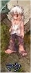
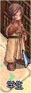
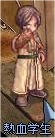

画像にリンクがはってあるものは、クリックすると別窓で大きめサイズが表示されます。
[マク]
所在地；リヒタルゼン貧民街（337,232） |
|  |
[ダイガツ]
所在地；リヒタルゼンホテル2F（231,200） |
  |
[学生]
所在地；ジュノー図書館内（103,51） |
  |
[ベンカイスティン]
所在地；ジュノー図書館内（103,64） |
|  |
[治安維持員]
所在地；リヒタルゼン貧民街との間 |
  |
back
(c) Gravity Co., Ltd. & Lee MyoungJin(studio DTDS). All rights reserved.
(c) GungHo Online Entertainment, Inc. All Rights Reserved.
当コンテンツの再利用（再転載・配布など）は、禁止しています。